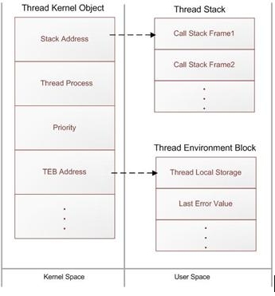
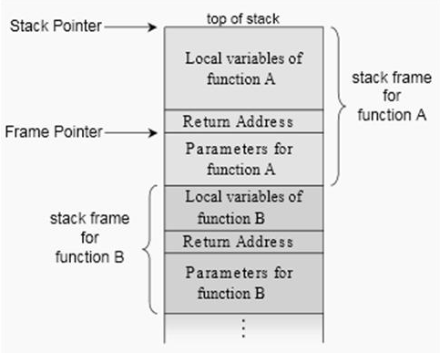
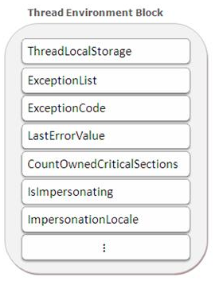
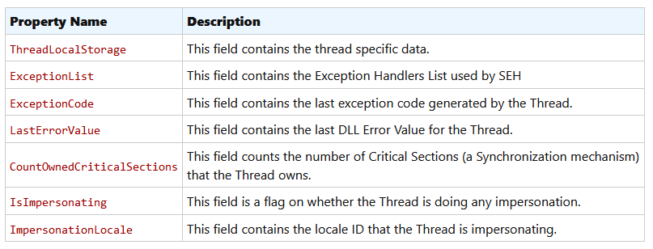
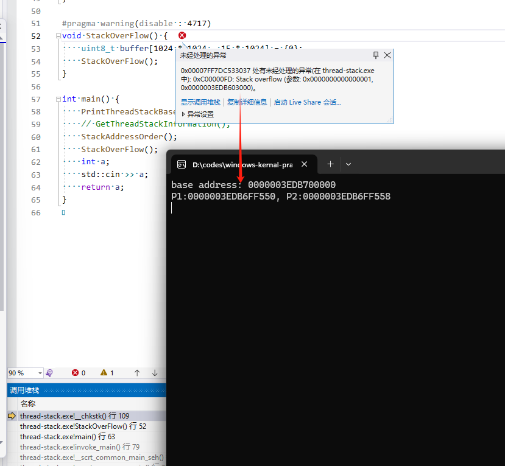

windows线程
线程包含三个东西:
- Thread Kernal Object
- Stack
- TEB
内核对象：

Thread Context
- 寄存器状态: instruction pointer(指令地址) and stack pointer registers(栈地址)
- TEB: This field contains a pointer to the Thread’s Environment Block.
- others
Thread Stack
线程栈就是系统分配的一块内存，用来保存函数的局部变量、传给函数的变量

每个线程有2个栈, 一个在内核态，一个在用户态（https://www.cnblogs.com/5iedu/p/4888094.html）
用户态的栈空间默认是1MB。
内核态的栈常驻RAM(如果线程处于Running或者Redy状态)，32位系统下是12KB，64位系统下是24KB。
Thread Environment Block (TEB)
TEB是一块系统分配的内存（用户态地址，可以被应用程序访问）, 这块地址总共是1个PAGE(4KB x86|x64) 
2个特别重要的数据:
- SEH(结构化异常)的头(第一个try)
- 线程局部变量
- 其他： 
TEB的地址可以可以通过访问FS寄存器得到:
#include <intrin.h>
#include <winternl.h>
void *getTIB() {
#ifdef _M_IX86
return (void *)__readfsdword(0x18);
#elif _M_AMD64
return (void *)__readgsqword(0x30);
#else
#error unsupported architecture
#endif
}
线程栈的大小
有多种方式指定线程栈(用户态)空间的大小: 编译选项、链接指令、CreathreadEx参数
模拟与观察栈溢出
#include <winternl.h>
// 先查看线程栈的基地址
void PrintThreadStackBaseAddress() {
NT_TIB* ptr = (NT_TIB*)getTIB();
std::printf("base address: %p", ptr->StackBase);
}
void StackOverFlow() {
uint8_t buffer[1024 * 1024 - 15 * 1024] = {0};
StackOverFlow();
}
int main() {
PrintThreadStackBaseAddress();
// GetThreadStackInformation();
StackAddressOrder();
StackOverFlow();
int a;
std::cin >> a;
return a;
}

默认情况下栈大小是1MB，所以在最后的4KB（一页）上发生栈溢出（猜测）。
CRT中的栈地址检查函数
系统分配内存的时候并不会直接分配，而是等到发生缺页异常的时候（写某个地址）。那么久存在一个问题:
// sizeof(int) * 5KB 要分配整个空间么?
int a[1024 * 5] = {0};
a[0] = 1;
a[0] 处于栈的低地址(注意栈的增长方向)属于尚未分配的页, 为了解决这个问题, 编译器会插入栈检查函数，也就是说上面那个__chkstk()函数，这个函数的代码如下：
102: _chkstk endp
103:
104: end
105:
00007FF7DC53302A and r10w,0F000h
105:
00007FF7DC533030 lea r11,[r11-1000h]
105:
00007FF7DC533037 mov byte ptr [r11],0
105:
00007FF7DC53303B cmp r10,r11
105:
00007FF7DC53303E jne cs10 (07FF7DC533030h)
105:
00007FF7DC533040 mov r10,qword ptr [rsp]
105:
00007FF7DC533044 mov r11,qword ptr [rsp+8]
105:
00007FF7DC533049 add rsp,10h
// 伪代码：
void StackCheck(int nBytesNeededFromStack)
{
//获得栈顶指针，此时栈顶指针还没减去“局部变量”所示的空间大小
PBYTE pbStackPtr = (CPU's stack pointer); //CPU栈顶指针
while(nBytesNeededFromStack >= PAGESIZE)
{
//将栈顶指针移到PAGE_GUARD页面
pbStackPtr -=PAGESIZE;
//访问1个字节，以强迫系统调拨下一个页面
pbStackPtr[0] = 0;
//剩下需要调拨的字节数
nBytesNeededFromStack -= PAGESIZE;
}
//用返回之前，StatckCheck函数将CPU的栈顶指针设置在调用函数
//的局部变量下
}
检查代码的原理很简单：每次试图访问下一个页面中的某个地址，以使系统自动为它分配调拨内存，直到需要的栈空间都满足为止。当然如果预设的栈空间不够的话，还是会先引发溢出异常。